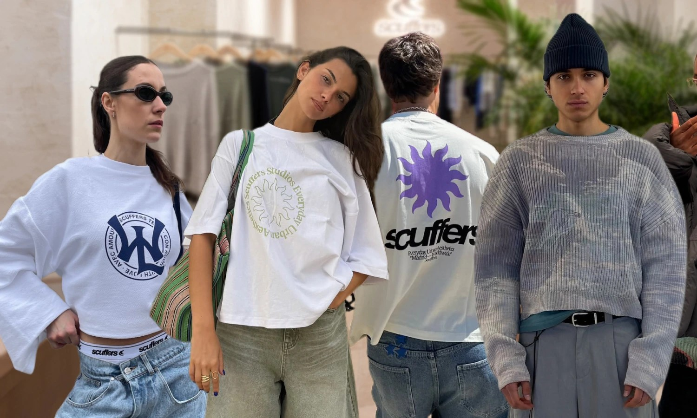

Scuffers nació en Costa Rica con la idea de crear una marca diferente, inspirada en la moda
urbana y en la forma de vestir de las nuevas generaciones. Desde sus inicios, la marca se
enfocó en diseñar prendas cómodas, modernas y fáciles de combinar, manteniendo siempre
un estilo auténtico y minimalista.
Con el paso del tiempo, Scuffers logró crecer gracias a su comunidad y a la presencia que
ganó en redes sociales, llegando a personas de distintas partes del mundo interesadas en
el streetwear y la moda casual. Actualmente, la marca continúa expandiéndose y llevando
su estilo a diferentes países de Centro América y otras regiones, manteniendo la esencia con la
que comenzó: ropa sencilla, con personalidad y pensada para el día a día.